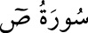

<a name=7394></a><br/>
<b>38- SÂD SÛRESİ</b><br/>
<i><b>Sâd sûresi, Kamer sûresinden sonra Mekke’de inmişir; 88 âyettir. İsmini birinci</b></i><br/>
<i><b>âyette yer alan “Sâd” harfinden alır.</b></i><br/>
